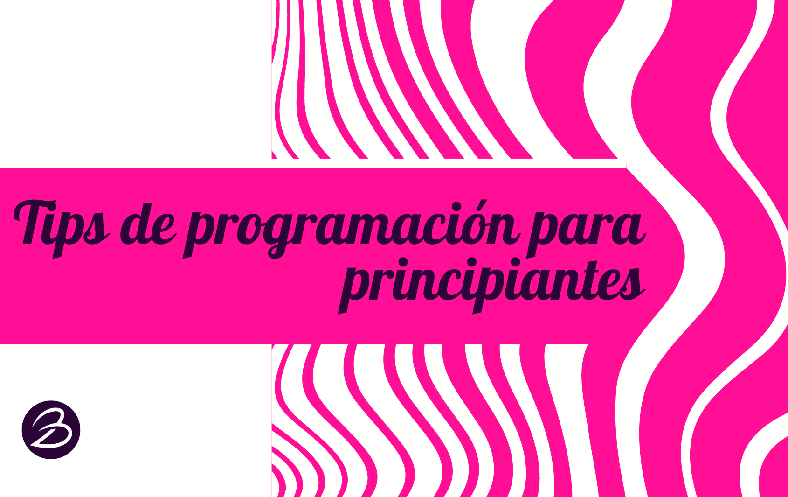

- 
-
Nombres de variables
# Ejemplo
❤ La forma en que nombras tus variables te ayudará a que sea más fácil entender de qué se trata el código ❤ Usa nombres significativos como en el ejemplo.
edad = 29 -
💖 Comentarios 💖
# Este es un comentario
Los comentarios sirven para que otros o nosotros mismos nos guiemos al leer el código 👀 Este texto no se ejecuta y cada lenguaje de programación tiene su propio símbolo para indicarlos.
# ¡Serás un programador genial! -
✅Buenas Prácticas
Existen ciertas reglas o acuerdos comunes que son útiles a la hora de entendernos.
¡Revisa los 12 mandamientos de Python !🧚♂️🙏
Si estás comezando a aprender Python 🐍, te será útil revisar estos 12 puntos importantes. Estos puntos te ayudarán a tener lo que se conoce como "buenas prácticas" en programación. -
Mensajes de error ❎
Error: Object "💩" not found.
Los mensajes de error pueden ser muy útiles y son más comunes de lo que piensas. Lee con cuidado e identifica la línea del error.
Line 59. -
Ayúdale a tu compu! 💻
# Caso 1 x = 1/2
# Caso 2 z = 0.5Ayuda a que el proceso de ejecución sea más rápido. Esto es útil en computo científico. ¿Cuál caso es mejor? El caso 2 es mucho más económico que el caso 1. Ambos valen lo mismo, pero una división implica 1 paso extra.
-
Ahorremos líneas 👛
1. key
Siempre trata de pensar una mejor manera de lograr una menor cantidad de líneas en tu código. 💟 Economizar es una habilidad se gana poco a poco y con la práctica.
2. useless -
¿Qué es la identación?
Es la forma de ordenar el código.
La tecla Tab ↹ es tu mejor amiga! 🧡 En Python es imprescindible. -
Elige al correcto 💞
Cada lenguaje tiene su uso, así como ventajas o desventajas para distintos objetivos. Elige el que mejor te convenga como herramienta.
-
¡Github!
Aprender a usar GitHub es buena idea. Conoce a otros programadores y almacena tus proyectos. Abre una cuenta es muy fácil.